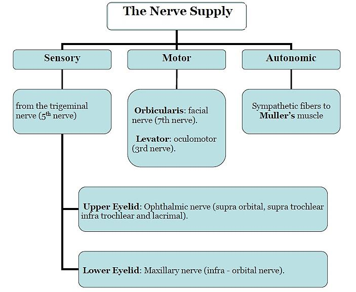

Part I · Nerve supply
Nerve supply of the eyelid
- Sensory — from the trigeminal nerve:
- Upper eyelid: ophthalmic nerve (supraorbital, supratrochlear, infratrochlear branches).
- Lower eyelid: maxillary nerve (infra-orbital nerve).
- Motor — orbicularis oculi by the facial nerve (VII); levator palpebrae superioris by the oculomotor nerve (III).
- Autonomic — sympathetic fibres to Müller’s muscle.
